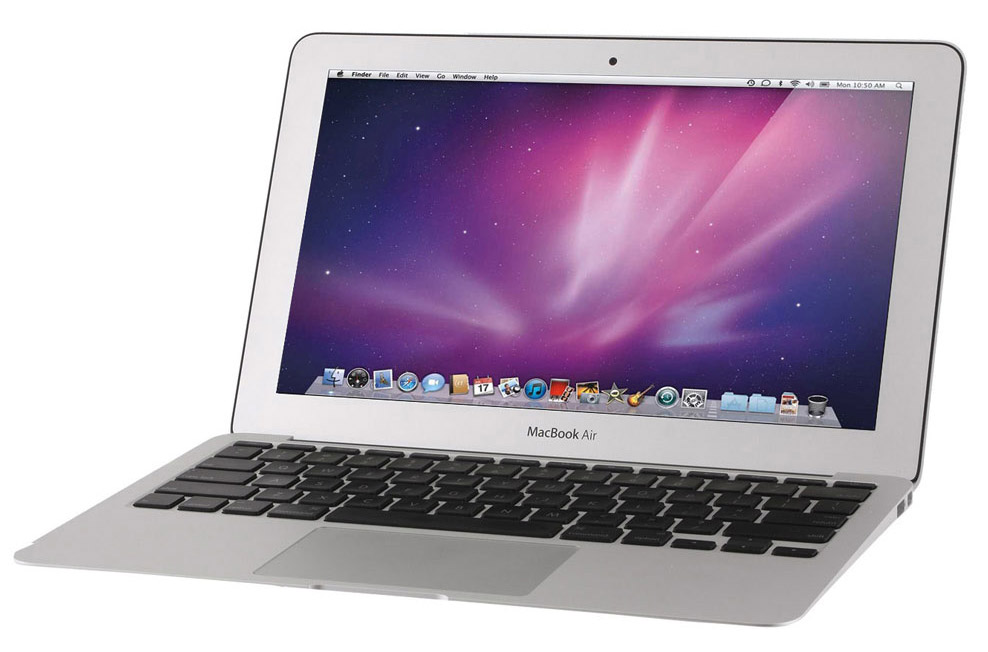

Macbook Air - Review
Apple's often imitated but never bettered ultra-portable laptop puts in a strong, though not faultless, performance with this mid-2013 release, the sixth-generation of the MacBook Air. It offers significant improvements in its solid state storage speed, graphical power, battery life and wireless capabilities, but the processor's clock speeds actually take a backward step. But as we'll see, for most real-world applications, the MacBook Air 2013 matches or out-performs its predecessor. Like most recent MacBook Air refreshes, the mid-2013 update brings us four new models; two with 11-inch screens and two with 13-inch displays. All use Haswell 1.3GHz Intel Core i5 dual-core processors, replete with Intel HD Graphics 5000, the latest version of Intel's integrated graphics chipset. They also all run the OS X 10.8 Mountain Lion operating system, although this will change to OS X Mavericks when available. The cheaper model in each of the two screen sizes has 128GB of solid state storage, the more expensive version has 256GB, and all offer 4GB of RAM. The version on test here is the top-of-the-range 256GB 13-inch MacBook Air, which costs £1,129 / US$1,299 / AU$1,449. The lower specced 128GB 13-inch model is £949 / US$1,099 / AU$1,249. If your budget won't stretch that far - or if you just want a smaller model - the 11-inch MacBook Airs are priced at £849 / US$999 / AU$1,099 for the 128GB version and £1,029 / US$1,199 / AU$1,349 for 256GB of storage. While the quality of the MacBook Air isn't in question, not everyone is prepared to pay so much for a light, carry-around notebook. For those on a budget, Chromebooks offer good value for money, as long as they meet your needs. Eschewing OS X, Windows and Linux for Chrome OS, these run web-based applications and can be bought very cheaply. For example, the Samsung Chromebook cost just £230 / US$330 / AU$320 at launch. More expensive Chrome-powered notebooks are available too, though. Google's own Chromebook Pixel is a gorgeous high-end notebook costing £1,050 / US$1,300, which is more than either of the two 11-inch MacBook Airs in the mid-2013 refresh, but it proves cloud computers can be as stylish and desirable as an Apple notebook. If you want a Windows 8 ultra-portable notebook, the Samsung Series 9 NP900X3D has an Intel Core i5 processor, a 13-inch screen and 128GB of flash storage like this MacBook Air. If you prefer Windows to OS X, the Lenovo ThinkPad X1 Carbon Touch is one of the thinnest and lightest Windows 8 netbooks on the market, and a very credible alternative to the MacBook Air. People who want a Mac but need a lot of processing power, such as video editors, gamers and graphic artists, might be better off with a MacBook Pro or an iMac. But the MacBook Air is fine for everyday computing, and perfect for business travellers and regular commuters.
Specifications
As mentioned earlier, the 2013 13-inch MacBook Airs use Intel's new Haswell processors, the latest in the company's Core range. Off the shelf, they're dual-core 1.3GHz Intel Core i5 chips. Their Hyper-Threading feature enables each of the two cores to run two threads simultaneously, for four virtual cores, and at times of intense needs, underused resources can be reallocated to Turbo Boost their speeds to up to 2.6GHz. Although the step up to Haswell series processors brings its own reward in terms of performance, the clock speed is actually a step backwards from the previous generation, which used a dual-core 1.8GHz Intel Core i5 off the shelf. The Haswell processors' integrated Intel HD Graphics 5000 is definitely a step up from the 2012 MacBook Airs, offering up to 40% more graphical power. The new MacBook Airs also use faster flash storage. It's up to 45% quicker than the previous generation, and nine times faster than a standard hard drive. Wi-Fi is faster too, with the new MacBook Airs giving us 802.11ac wireless internet. This is up to three times as fast as wireless n and offers a better range, assuming your router also offers the ac protocol. Beam forming technology focuses the signal onto connected ac devices for a much more stable connection, too. Of course, where the new Haswell processors really show their worth is in battery life. According to Apple, the new 13-inch MacBook Air lasts up to 12 hours on a single charge, or 10 hours of movie playback over iTunes. Like all recent MacBook Airs, when you close the lid it enters Standby Mode, an ultra-low energy state that can last for up to 30 days on a full battery. When you open the lid again, it's on straight away, though its fast solid state storage means it boots extremely fast even when switched off. The new 13-inch MacBook Air has a second microphone to reduce background noise when using features such as FaceTime or Dictation. The second microphone hole on the left-hand side of the casing is the only physical difference between this mid-2013 and the mid-2012 model; their chassis are otherwise identical. Interestingly, the oft-predicted Retina screen never emerged. Packing in such a high resolution it's impossible to distinguish between individual pixels at a normal viewing distance, Retina screens proved extremely popular on recent MacBook Pro and iPad models. Yet we didn't get one on the 2013 MacBook Airs, even as a custom option for those ordering on the Apple online store. Perhaps it would've taken too great a toll on the battery life.

Performance
The new Haswell processors use very little power, giving the 2013 13-inch MacBook Air and absolutely stunning battery life. In our test, in which we streamed the live BBC News channel feed on iPlayer over a wireless network, the laptop lasted for nine hours. That's significantly better than the 11-inch MacBook Air's 7 hours 15 minutes, and a substantial improvement over the 2012 MacBook Air's 5.5 hours.
Since switching to solid state storage off the shelf with the late 2010 update, the MacBook Air has been known for its good battery life. But with the Haswell processors in place, it's absolutely stunning. At last, you can use your notebook all day long on a single charge.
Benchmarks
Xbench: 357.50
Cinebench 10 Single core: 4242
Cinebench 10 Multi-core: 8636
iTunes encoding (USB SuperDrive): 452 seconds
Movie encoding (iMovie): 242.6 seconds
Doom 3: 68.9fps
Call of Duty 4: 67.8fps
Battery: 9 hours
Novabench, Total: 589
Novabench, Graphics: 44
Although the processors have a slower clock speed than the previous generation, across-the-board performance improvements mostly make up the difference.
The faster graphics enjoyed by the Haswell processors meant that in our Call of Duty 4 test, the 2013 13-inch MacBook Air ran the game at 67.8 frames per second, compared to 59.5fps for the 13-inch, 1.8GHz dual core Intel Core i5 model from 2012.
The much older Doom 3, however, seemed less able to take advantage of the Intel HD 5000 Graphics, running at 68.9fps on the 2013 Air, and 83.0fps on last year's model.
The new MacBook Air's faster storage gave it a definite advantage in our Xbench test, which we set up to measure both the CPU and storage performance. Its score of 357.50 was 5.4% up on last year's model.
But the swings-and-roundabouts improvement offered by the new MacBook Air is clearly demonstrated by our Cinebench test, where graphical and processing power is assessed first using a single core and then with every core available (on these dual-core, Hyper-Threading chips, that's four cores). Using only one core, the 2013 MacBook Air's score of 4242 is 3.9% up on last year's model, but with all cores in play, the 2012 MacBook Air's faster clock speed takes its toll - the 2013 model is actually 1.8% down.
It's around 40 seconds slower when encoding our five-minute test movie to iPod format using iMovie, too.
One thing that hasn't changed is the laptop's display. It's still a 1440 x 900 resolution, 13.3-inch LED-backlit glossy widescreen display, with rich, deep colours and good viewing angles.
The new MacBook Airs are just as portable as their predecessors too, with a tapered height of 0.3-1.7cm (0.11-0.68 inches), a width of 32.5cm 912.8 inches) and a depth of 22.7cm (8.94 inches). Most impressively of all, it weighs just 1.35kg (2.96lbs). If you're sick of lugging a hefty notebook around with you, the MacBook Air could be just what you need.
Verdict
The new 2013 13-inch MacBook Air makes some significant improvements on the 2012 model, but the processor's clock speeds are down. In performance terms, this means it outperforms its predecessor in some tests, but falls behind in others, generally by small margins. However, there's one test where the new MacBook Air clearly trounces the previous model...
We liked
...And that's battery life. The Haswell processors are designed to go light on power, and it shows. On a full charge, the new 13-inch MacBook Air is good for 12 hours of general computing, and lasted for nine hours of live video streaming. Very impressive figures. The new storage, which is 45% faster than the previous generation, and graphics that are around 40% quicker than before, are also to be commended, as are the switch to Wi-Fi ac and the inclusion of a second mic for reducing ambient noise. Key features we loved about previous MacBook Airs haven't gone away either. It's still incredibly light and portable, is very strong despite being thin and has a beautiful backlit keyboard. The multi-touch trackpad is a great asset too.
We disliked
But why did Apple have to reduce the processor's clock speed? It's down to 1.3GHz, from 2012's 1.8GHz, both dual-core Intel Core i5 chips. Improvements elsewhere - most notably the graphics and storage - mean you don't notice it all that much, but we wish the new MacBook Air CPUs at least matched the old ones. The expected Retina screen failed to emerge too, even as a custom option on the Apple online store, but we've mixed feelings about this one anyway. Although gorgeous to look at, would it have compromised the battery life to too great a degree? Talking of the Apple online store, if you want to upgrade your MacBook Air it's best to do it here at the time of purchase, since you can't make component upgrades later.
Final verdict
Despite the swings-and-roundabouts benchmarking results, the new MacBook Air is a definite and significant step up from last year's release. The battery life is little short of incredible. Business travellers taking long flights and students who need it all day for lectures and then throughout the evening for writing an essay will love its all-day power. The new MacBook Airs take it into the Wi-Fi ac era too, giving speedier, more stable wireless connections - as long as your router is also wireless ac. The faster graphics and quicker storage do much to compensate for the slower processors, but we wish Apple had at least matched the 2012 MacBook Air's clock speeds.